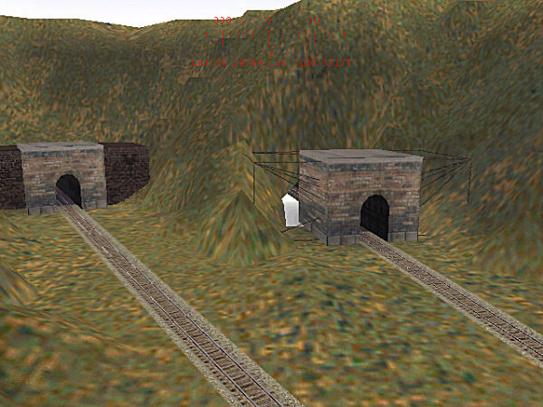
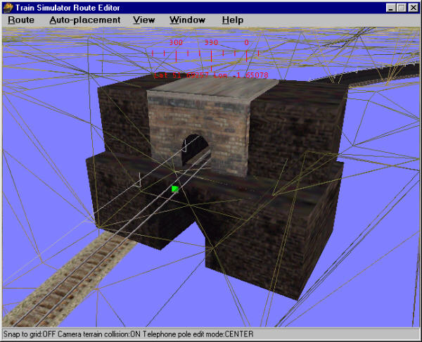

More Tunnel Tips
by Jim Steven and Jim "Sniper297" Ward
Overview
Read Creating Tunnels in MSTS for an overview of creating tunnels.
Quick reference summary:
- Punch a hole in terrain with the "V" key;
- Place tunnel portal;
- Hide hole with transfers.

|

|
Read Creating Tunnels in MSTS for an overview of creating tunnels.
Quick reference summary:
This tutorial lists some extra points by two other authors that you may wish to consider.
If Error Bias is not zero, you end up with large triangles. If the Detail Scaling Factor is not small enough, you also get large triangles.
Jim Steven, MCSE, Senior Microsoft Windows Application Developer
Essentially it's just a matter of stacking tunnel entrances to hide overly large holes you've created with the "V" key.
The JP1singletunnel is the perfect size for single track, but it's too narrow outside to hide the gaps. The UKtunnel is wide enough outside, but too wide inside, so I combine the two.
Download PO&Nver5.zip and install it, open it in the RE and poke around, "reverse engineering" is the easiest way to figure out how somebody did something. In some places you'll see multiple tunnel stacks, vertically and horizontally, but by setting the terrain tool "cutting" to 55-65, "width" to 12, and using a temp piece of 10 meter straight track (moving it where you want and hitting Y to cut away terrain), you can adjust the slope where the V key makes the hole.

This shot at right was before I learned how to make the holes smaller. That's why it has a tunnel section buried in the ground, to hide the big hole in the ground under the tracks! I later used that to make "floors" for the engine sheds.
